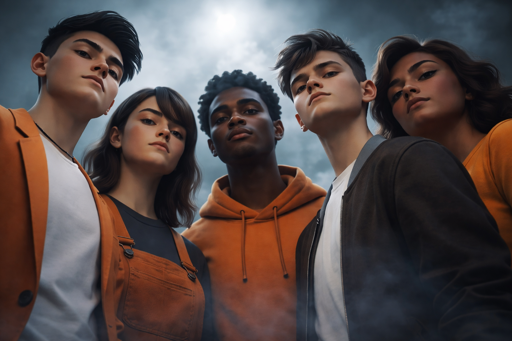
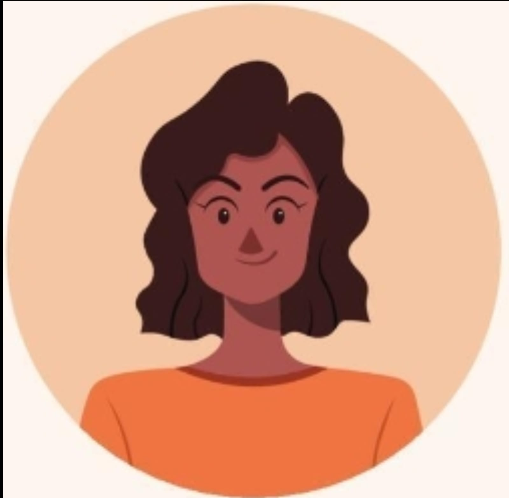

Equipo de Desarrollo de Grupo SuperMegaPro

Octavo Semestre (2026)
Informacion del equipo
Somos el Grupo SuperMegaPro, un equipo de cinco estudiantes de Ingeniería Civil de la Universidad San Sebastián. Nos une la pasión por la tecnología y la innovación aplicada a problemas reales. Durante este semestre colaboramos en el ramo de Aplicaciones y Tecnologías de la Web, explorando el desarrollo web desde sus fundamentos. Cada integrante aporta una perspectiva única, desde Data Science e IA hasta videojuegos, logística y arquitectura cloud. Juntos buscamos construir soluciones sólidas, creativas y funcionales.
Los Cinco Destinos
En la era en que los dioses del Olimpo aún influían en los mortales, una antigua profecía anunciaba que cinco almas unidas podrían desafiar incluso a los cielos. El destino comenzó a cumplirse cuando Irian, el Portador del Alba, de espíritu firme y guía natural; Isidora, la Guardiana del Eco, capaz de escuchar lo invisible; Augusto, el Forjador de Voluntades, fuerte y resiliente; Cristóbal, el Caminante de Sombras, hábil en lo desconocido; y Constanza, la Llama Inquebrantable, llena de determinación, fueron llevados al mismo lugar sin saber por qué.
"Separados eran fragmentos, pero juntos podían convertirse en algo mucho mayor."
Durante un eclipse, sus caminos se cruzaron en un templo en ruinas, donde una voz ancestral les reveló su propósito. Así nació el nombre que los definiría: los Cinco Destinos.
Para probar su unión, los dioses los desafiaron a atravesar el Valle de las Sombras Eternas. Allí, cada uno cumplió su rol: Irian guió, Isidora advirtió, Augusto sostuvo, Cristóbal encontró caminos y Constanza mantuvo viva la voluntad de todos. Unidos, lograron superar lo imposible.
Desde entonces, no fueron recordados como individuos, sino como una sola fuerza. Así nació la leyenda de los Cinco Destinos, cuyo poder no residía en cada uno, sino en su unión inquebrantable.

Nuestros Integrantes
Augusto Pinto
Santiago, Chile | apintob@correo.uss.cl
Ingeniería Civil - Universidad San Sebastián (USS)
Intereses: Data Science, IA y Hardware.
Proyectos
- Desarrollo de ERP Helix con IA
- Simulación de ciclos termodinámicos R-134a
- Configuración de redes con Cisco Packet Tracer
Constanza Araya
Santiago, Chile | carayaf@correo.uss.cl
Ingeniería Civil - Universidad San Sebastián (USS)
Intereses: Gestión de proyectos y Finanzas.
Proyectos
- Creación de diagramas Gantt para laboratorio
- Análisis de VAN y TIR para startups
Irian Lopez
Santiago, Chile | ilopezt2@correo.uss.cl
Ingeniería Civil - Universidad San Sebastián (USS)
Intereses: Desarrollo de videojuegos y Godot.
Proyectos
- Trivia interactiva en Godot
- Optimización de inventarios con agentes
Cristobal Vega
Santiago, Chile | cvegaf2@correo.uss.cl
Ingeniería Civil - Universidad San Sebastián (USS)
Intereses: Logística e Ingeniería Industrial.
Proyectos
- Mapa interactivo lineas de metro
- Optimizacion de rutas para servicio
Isidora Moscoso
Santiago, Chile | imoscosor@correo.uss.cl
Ingeniería Civil - Universidad San Sebastián (USS)
Intereses: Arquitectura Cloud y desarrollo Web.
Proyectos
- VideoJuego GameMaker
- Optimizador Licencias Office
Guías y Tutoriales
Instalación de Docker
Guía paso a paso para instalar Docker Desktop en Windows, configuración de WSL 2 y ejecución del primer contenedor.
Diccionario de Comandos
Explora los comandos esenciales de Docker como build, run, stop y rm para gestionar imágenes y contenedores Nginx de forma eficiente.